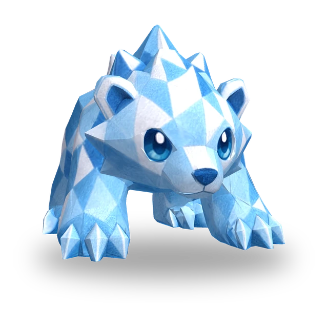

フロストスマッシュ
現在の対象に攻撃力の240%分の物理ダメージを与え、1.5秒間凍結させます。凍結した敵は行動とマナの獲得が止まります。対象の後ろへ2マスまで広がる扇形の範囲内の敵に、攻撃力の180%分の物理ダメージを与え、攻撃速度を6秒間15%下げるフロストを付与します。
 3D
3D
| Lv. | HP | 攻撃力 | 魔力 |
|---|---|---|---|
| 1 | 360 | 22 | 22 |
| 2 | 414 | 25 | 25 |
| 3 | 476 | 29 | 29 |
| 4 | 548 | 33 | 33 |
| 5 | 630 | 38 | 38 |
| 6 | 724 | 44 | 44 |
| 7 | 833 | 51 | 51 |
| 8 | 958 | 59 | 59 |
| 9 | 1101 | 67 | 67 |
| 10 | 1266 | 77 | 77 |
| 11 | 1456 | 89 | 89 |